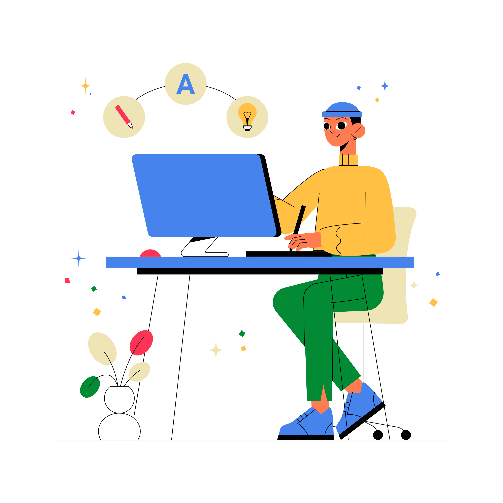
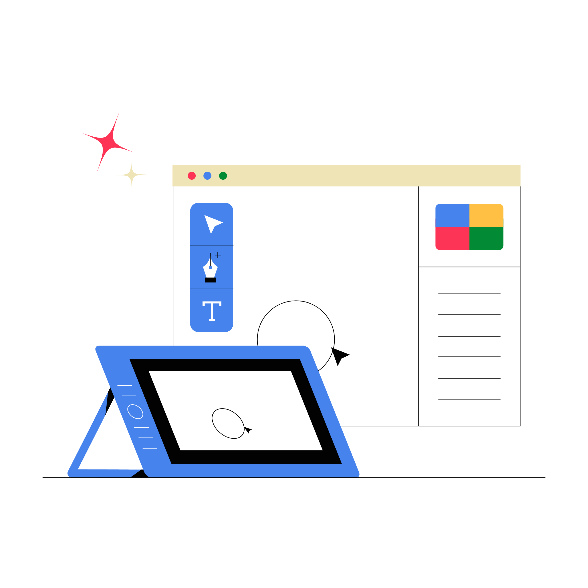

Principios de UX
Fundamentos del diseño de experiencia
El Diseño Centrado en el Usuario se apoya en diferentes métodos de validación que permiten comprobar si un producto realmente satisface las necesidades de las personas para las que fue creado. Entre las técnicas más utilizadas se encuentran las pruebas de usabilidad, entrevistas, encuestas, prototipos interactivos y la observación del comportamiento de los usuarios durante la interacción con un sistema. Estas herramientas ayudan a identificar problemas de navegación, accesibilidad y comprensión antes del lanzamiento del producto.

Fundamentos del diseño de experiencia
Patrones y guías para apps

Paletas y contraste en la web

La confiabilidad de este enfoque radica en que las decisiones de diseño se fundamentan en evidencia obtenida mediante la participación de usuarios reales, en lugar de basarse únicamente en suposiciones. Gracias a un proceso iterativo de evaluación y mejora continua, es posible desarrollar interfaces más intuitivas, eficientes y accesibles, incrementando la satisfacción del usuario y reduciendo errores durante el uso del producto o servicio digital.